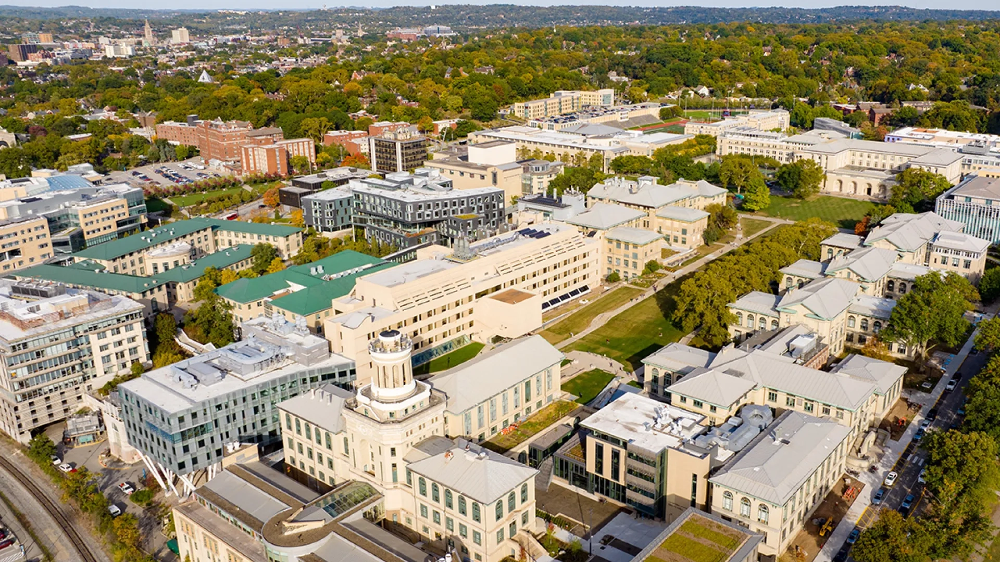
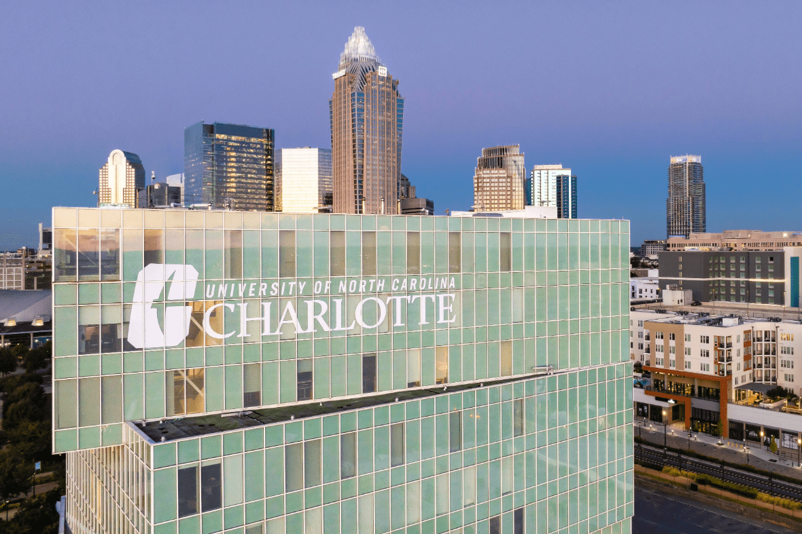
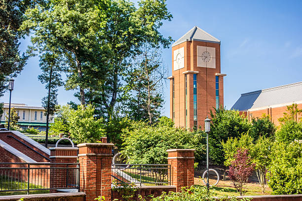
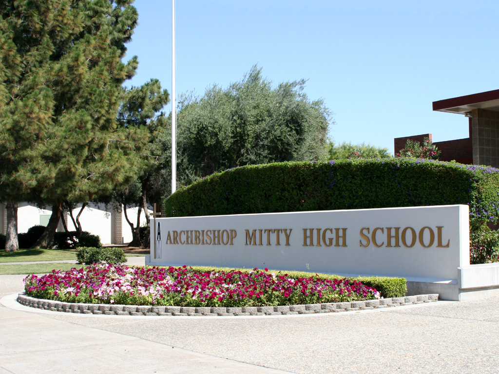

My Education
Carnegie Mellon University - IT Lab SSI
- Type: Summer Fellowship
- From: Summer 2026
- Program: IT Lab Summer Security Intensive
- GPA: N/A
-
Info:
- Seven week long program taking courses from the top cybersecurity researchers in the world.
- Offers the opportunity to work on real-world cybersecurity projects.

University of North Carolina at Charlotte
- Type: Graduate
- From: Fall 2026 | Spring 2028
- At: Charlotte, NC
- Major: M.S. Cybersecurity
- GPA: N/A
-
Info:
- Early Entry program allowing me to complete up to 15 credit hours during my undergrad.

University of North Carolina at Charlotte
- Type: Undergraduate
- Grade: Junior
- Graduation Date: Spring 2027
- Major: Computer Science B.S | Concentration: Cybersecurity
- Minor: Criminal Justice
-
Info:
- Learned a wide variety of coding languages such as Java, C, C++, HTML, MYSQL, and more.
- Involved in several clubs and organizations on campus such as the UNCC Taekwondo Club, 49er Culinary Club, and Criminal Justice Association.

Archbishop Mitty Highschool
- Type: High School
- From: 2019 | 2023
- At: San Jose, CA
- GPA: 4.0
-
Info:
- Competitive private college-prep high school in California.
- Completed several AP courses such as AP Computer Science Principles, AP Calculus AB.
- Played on the Freshman Soccer team and JV Track and Field Team

Education Timeline
-
Spring 2026
Classes:
ITIS 3246: IT Infrast and SEC
ITSC 3155: Software Engineering
ITSC 3688: Computers & Their Impact on Society
CTCM 2530: Interdisciplinary Critical Thinking and Communication Sociology
CJUS 3366: Domestic Violence
GPA: 3.85
Click to Close -
Fall 2025
Classes:
ITSC 3146: Intro Oper Syst & Networking
ITIS 3200: Intro to Info Security & Priv
CJUS 2360: Ethics and the CJUS System
STAT 2122: Intro to Prob & Stat
CJUS 2340: Criminological Theory
GPA: 3.8
Click to Close -
Spring 2025
Classes:
MATH 2164: Matrices & Linear Algebra
ITIS 3135: Web App Design and Development
ITSC 2181: Intro to Computer Systems
ITSC 3160: Database Design & Implementation
CJUS 1511: Local Social Science: Foundations of Criminal Justice
GPA: 4.00
Click to Close -
Fall 2024
Classes:
MATH 1242: Calculus 2
ITSC 2175: Logic and Algorithms
WGST 21600: Intro to LGBTQ+ Studies
SOCY 1511: Local Social Science: Sociological Approaches to Local Issues
MUSC 1512: Local Arts/Humanities: Music in U.S. Communities
GPA: 3.80
Click to Close -
Spring 2024
Classes:
ITSC 2214: Data Structures and Algorithms
METR 1102: Introduction to Meteorology
ITSC 1200: Freshman Seminar
MATH 1241: Calculus 1
ANTH 1501: Global Social Science: Anthropology
LTAM 1502: Global Arts/Humanities Introduction to Latin American History and Culture
GPA: 4.00
Click to Close -
Fall 2023
Classes:
ITSC 1213: Intro To Computer Science 2
PSYC 1101: General Psychology
MATH 1103: Precalc Math Science & Engr
WRDS: Writing and Inquiry in Academic Contexts I and II with Studio
ITSC 1200: Freshmen Seminar
GPA: 3.82
Click to Close